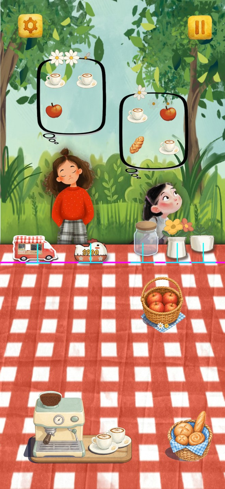
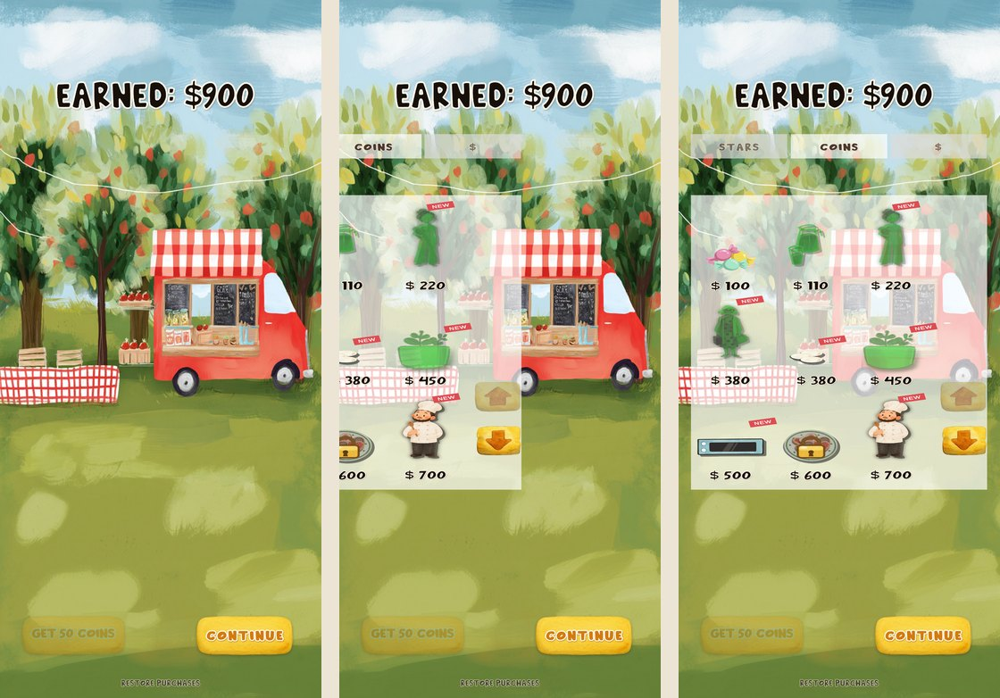
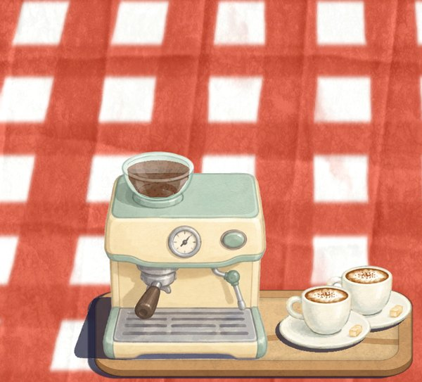
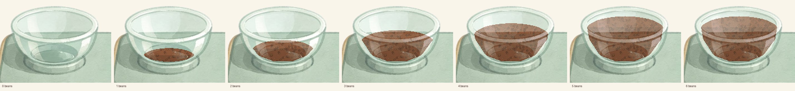
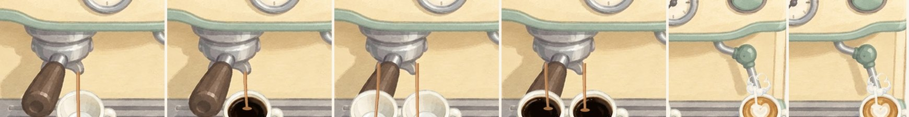
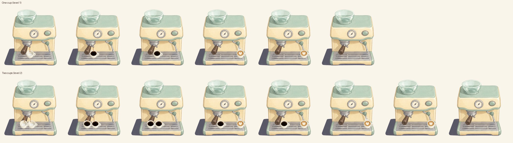
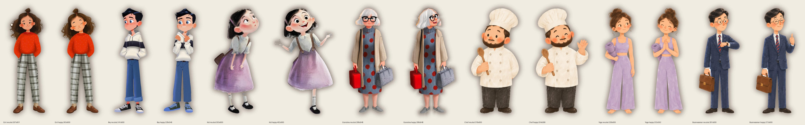
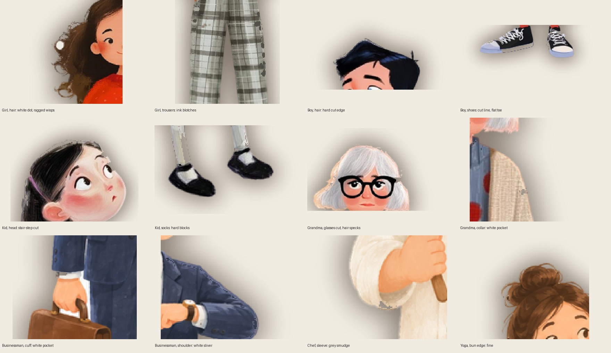

Food Truck Cafe
Your report for 9 November. Version 26.10.26 has been live on the App Store since 27 October.


1Next
You
Check the entries under Current. Say build when you want build 23.
Me
1 PM: the girl's brief to ChatGPT, then the apple shadow pass. The star shop once Q1 is answered.
2Q&A
Q1 · Star shop: what does it sell? 10 November
MVP 2 needs your list. The stars a day earns (1 to 3) already count on the map; I can add a star total and spend it in the Stars tab. Tick what the first star items should be, or write them.
Q2 · Which device data is yours? 10 November
The development data (TestFlight and editor) since 8 November holds only my two editors; your build 22 session has not arrived there yet. The production data (store copies) has one new player since 9 November: id e048d9, iOS, version 26.10.26, Saturday 8 November 20:46 to 21:14 PST, three days started and finished. If that was you on the new iPhone, it stays out of the store numbers.
3Current
Back row bottoms, whole screen, 10 November. Measured from the sprite content now, not the image: the game reads each sprite's pixels and takes its lowest solid row (every one of these sprites has a soft shadow fringe fading out below the object, which the eye does not read as the bottom, so faint rows do not count). No spacing numbers typed by hand. The pink line is the flower pot's lowest painted row; each cyan post is that item's own. Truck, hen board, jar, both pots: on the line (the truck breathes a few pixels with its wobble).

Shop tabs: part of the panel, 10 November. Folder tabs: the three share the panel's full width with no gaps, the open one is taller and in the panel's colour so it is one shape with the panel, the closed ones sit lower and a shade darker behind. Panel and tabs are one object; the slide-in moves it whole. Left: mid-slide (slowed), right: in place.

Coffee machine, 10 November. Your previous bean sprites, set inside the bowl: the bowl's glass front is laid over them so they sit between back and front. The pours the way your old frames did them: a thick straight dark bar from each spout straight down to the cup's bottom. All cups stay on the tray line; the steam wand is lengthened instead, so its tip reaches into the latte cup, in front of the cup, with the puff at the milk.




Customer sprites, review, 10 November. All seven, both moods, below; the second sheet shows the faults close up. What I found and what I propose:
- Boy, worst fit: a shiny 3D-render look unlike the painted others; hard cut edges on the hair; a cut line and flat toe on the shoes; his happy frame is a smaller canvas (228 x 546 against 241 x 600), so he shrinks when he smiles. Repaint both moods in the painted style.
- Girl: a white dot left in the hair, ragged cut wisps, ink blotches on the plaid trousers. Repaint both moods, same design.
- Kid: stair-stepped cut around the head, hard white blocks on the socks, and her happy frame is a different drawing and size (402 x 665). Repaint both moods to match.
- Grandma: the glasses frame is cut on the right, white specks in the hair, a white pocket at the collar. Clean-up only, no repaint.
- Businessman: a white pocket at the cuff, a white sliver at the shoulder, a hard hair edge. Clean-up only.
- Chef: one grey smudge on the left sleeve. Clean-up only.
- Yoga: fine as is.
Your word: the girl first. Her brief (both moods on one sheet, same pose and clothes, clean edges, plain white) is ready and goes to ChatGPT at 1 PM when the picture quota returns; the result comes here for your pick before anything is cut.


4MVP
Your words, 9 November. Release goal: Thursday 13 November.
- A couple of things to improve gameplay. Your picks (Q3): d night lights (lit truck windows and fireflies in chapter 1, a lantern glow in chapter 2) and e the shop NEW tag and the bought item flying to the table.
- Stars as a currency, and a star shop panel in the shop. Tabs on the shop panel: left Stars, middle Coins (default, the existing items), right $ (real money, Remove Ads).
- Remove Ads purchase, $1.99 (the Paid Apps Agreement first).
- At least five rounds of your own play test on TestFlight, feedback after each.
5Backlog
Do in the polish release. Unticked items go when you say clean up.
6Analysis, 2 to 8 November
Read 9 November, 10:00 PST. Days are UTC. Players and ads from Unity. App Store Connect is signed out, so Apple's downloads, impressions and page views wait for your sign-in.
| Day | New players | Finished the tutorial | Days finished | Ad requests | Ads shown | Ad revenue |
|---|---|---|---|---|---|---|
| Sun 2 | 0 | 0 | 0 | 0 | 0 | $0 |
| Mon 3 | 2 | 1 | 0 | 6 | 1 | $0.02 |
| Tue 4 | 0 | 0 | 0 | 0 | 0 | $0 |
| Wed 5 | 0 | 0 | 0 | 0 | 0 | $0 |
| Thu 6 | 1 | 0 | 0 | 1 | 0 | $0 |
| Fri 7 | 3 | 0 | 0 | 7 | 2 | $0.02 |
| Sat 8 | 0 | 0 | 0 | 0 | 0 | $0 |
| Week | 6 | 1 | 0 | 14 | 3 | $0.05 |
| Week before, 26 Oct to 1 Nov | 9 | 6 | 21 | 88 | 23 | $0.08 |